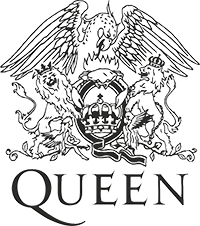

Queen formed in 1971 and in 1973 signed their first recording contract for EMI. That year they released their first album, Queen. The same year saw their first major UK tour, and in 1974 they released Queen II as well as making their first UK headlining tour. They made their first US tour, and in November released Sheer Heart Attack which was a hit on both sides of the Atlantic.
1975 saw their new release, A Night At The Opera, and – significantly – the single Bohemian Rhapsody. At 5’ 55” it should have been too long for successful radio play but it became one of the greatest singles of all time, staying at No. 1 in the UK chart for nine weeks. The video, directed by Bruce Gowers, is credited with being the first genuine promotional video. The song has regularly featured in all major pop polls and was recently named again as the best single of all time. The success of A Night At The Opera was equally stunning, giving the band their first platinum album.
In 1976 they toured the US and Japan and by spring all four albums resided in the UK Top Twenty. Later that year they released A Day At The Races, and gave a free concert in Hyde Park to an estimated crowd of 200,000 fans. The album was a huge success, advance orders alone amounting to over 500,000. The following year saw two major US tours, the band’s sixth album, News Of The World and the legendary double A side single, We Will Rock You and We Are The Champions.
1978’s Jazz, included another huge hit single in Bicycle Race and Queen toured the US and Canada. They spent much of 1979 touring in Europe and Japan, as well as releasing their first live album, Live Killers. They were also approached to write the score for a forthcoming feature film, Flash Gordon. Before that they released The Game in 1980 which went five times platinum in Canada alone! Another One Bites The Dust became the band’s biggest selling American single. Later that year the soundtrack for Flash Gordon was released and by the end of the year Queen had sold over 45,000,000 albums worldwide.
In 1981 they toured the Far East and were the first band to make a stadium tour of South America. They played to 131,000 people in Sao Paolo, the largest paying audience for any band anywhere in the world. Greatest Hits, Greatest Flix and Greatest Pix were released simultaneously later in the year and Greatest Hits has rarely been out of the UK album charts since. Greatest Flix was the first collection of promo-videos released commercially by any band. Next year saw the release of the band’s twelfth album, Hot Space whilst they were in the middle of a European tour.
1984 saw The Works and the single Radio Ga Ga became a worldwide hit, reaching No. 1 in 19 countries. Another huge hit was I Want To Break Free, featuring one of their most famous videos, all dressed in drag. In 1985 they were the headlining act at Rock in Rio, the biggest festival to be held anywhere in the world. They again made history that year with the show-stealing performance at Live Aid from Wembley Stadium, which proved to be a turning point for the band, One Vision being the first post Live Aid release.
1986 saw their 14th album, A Kind Of Magic, which was the soundtrack to the Russel Mulcahy film, Highlander. The title track became another worldwide smash and the album entered the UK charts at No. 1; later in the year the 2nd live album, Live Magic, went into the charts at No. 3. Between 1988 and 1991 Queen released three more albums, The Miracle in 1989 and in 1991 Innuendo and Greatest Hits II. All three entered the UK charts at No. 1, as did the single Innuendo.
On 23rd November 1991 Freddie Mercury announced to the world that he had AIDS and the next day he died peacefully at his home, surrounded by family and friends. He remains the most high profile loss from the disease in the entertainment world and the news shocked fans throughout the world. As a tribute Bohemian Rhapsody / These Are The Days Of Our Lives was released as a double A-sided single to raise funds for the Terence Higgins Trust. It entered the UK chart at No. 1, where it stayed for five weeks, raising over £1,000,000 for the charity and Queen became the first band to have the same single top the UK charts twice. In December of that year Queen had 10 albums in the UK Top 100. In 1992 Freddie was awarded posthumously the BRIT’s “Outstanding Contribution to British Music” and Days Of Our Lives won Best Single. On 20th April many of the world’s top stars joined Brian, Roger and John on stage at Wembley for an emotional tribute to Freddie.
In 1995 the tracks that Queen had begun in 1991 were completed by Brian, Roger and John and the long-awaited Made In Heaven was released worldwide. It was the end of an era. Since then the phenomenon of Queen has remained, however, with continuing sales for their recorded output on CD and video. A ballet of their music by famous French choreographer Maurice Bejart was premiered at the National Theatre in Paris in 1997 and in May 2002 the hit musical We Will Rock You opened to sell-out audiences in London’s West End and continues to play to packed houses and standing ovations every night. Queen’s first DVD Greatest Video Hits Vol.1 was released at the end of October 2002, and yet another piece of Queen product entered the UK charts at number 1. October 2002 also saw Queen receive their own star on the Hollywood Walk of Fame, Los Angeles, joining The Beatles as only one of a handful of non-US bands to receive the much coveted honour. Last year, 2004 they were inducted into the Rock and Roll Walk of Fame, and in the UK were voted by the public into the first UK Music Hall of Fame.
Queen’s musical has since opened in Australia, Spain, Las Vegas,USA, Russia, Germany and Japan and continues to have touring productions across the world.
Brian and Roger continue to be ambassadors for the Mercury Phoenix Trust, the HIV/AIDS charity set up following the death of Freddie in 1991. To date the charity has helped over 800 projects worldwide and raised over $16 million in the fight against the disease.
Brian and Roger took Queen back onto the touring circuit for the first time since 1986 in 2005 and 2008, joined by former Free/Bad Company singer, songwriter and musician Paul Rodgers playing concerts across the UK and throughout Europe.
Since 2012 Queen have enjoyed a fruitful collaboration with US singer/songwriter Adam Lambert and have toured extensively across North and South America, Europe, the UK, Asia and Australia and New Zealand.
The life of Farrokh Bulsara began on the East African island of Zanzibar on September 5, 1946. 25 years later in London under the name of Freddie Mercury he was fronting the now legendary rock group named Queen.
The son of Bomi and Jer Bulsara, Freddie spent the bulk of his childhood in India where he attended St. Peter’s boarding school. He began taking piano lessons at the age of seven. No one could foresee where a love of music would take him.
The Bulsara family moved to Middlesex in 1964 and from there Freddie joined up with a blues band called Wreckage while studying graphic design courses at Ealing College of Art. While singing for Wreckage, a fellow student introduced Freddie to Roger Taylor and Brian May, founder members of a band called Smile. Smile metamorphosed into Queen when Freddie joined Roger and Brian as the lead vocalist. The final member of the band, which was to stay together for the next 20 years, was bassist John Deacon, who joined the band on 1st of March 1971.
The rest is rock history. EMI Records and Elektra Records signed the band and in 1973 their debut album Queen was released and hailed as one of the most exciting developments ever in rock music.
The immortal operatically styled single Bohemian Rhapsody was released in 1975 and proceeded to the top of the UK charts for 9 weeks. A song that was nearly never released due to its length and unusual style but which Freddie insisted would be played became the instantly recognisable hit. By this time Freddie’s unique talents were becoming clear, a voice with a remarkable range and a stage presence that gave Queen its colourful, unpredictable and flamboyant personality.
Very soon Queen’s popularity extended beyond the shores of the UK as they charted and triumphed around Europe, Japan and the USA where in 1979 they topped the charts with Freddie’s song Crazy Little thing Called Love.
Queen was always indisputably run as a democratic organisation. All four members are each responsible for having penned number one singles for the band. This massive writing strength combined with spectacular lights, the faultless sound, a sprinkling of theatricality and Freddie’s balletic movements made up Queen on stage and on film.
Through Freddie’s ability to project himself and the band’s music and image to the four corners of 70,000 seater venues they became known as the prime developers of stadium rock, a reputation perpetuated by their pioneering tactics in South America where in 1981 they performed to 231,000 fans in Sao Paulo, a world record at the time. They also became known as the key innovators of pop videos as their catalogue of 3-minute clips became more and more adventurous in style, size and content.
Their phenomenal success continued around the globe throughout the 80’s highlighted in 1985 by their show-stealing and unforgettable performance on stage at Live Aid.
In the mid 80’s, Freddie started concentrating on his solo career, which was to run in tandem with Queen (“the mothership”) for several albums commencing with the 1985 release of Mr. Bad Guy. Freddie’s much loved sense of self-parody reached a zenith with his cover version of The Platter’s song The Great Pretender in 1987, the video of which recorded him descending a sweeping staircase among acres of identical cardboard cutouts of himself.
His first major collaboration outside of Queen was with Dave Clark for the recording of London’s West End musical Time, in 1986. This was followed in 1987 with the realisation of one of Freddie’s long-term dreams; to record with the world revered opera diva Montserrat Caballé. The LP’s title song, Barcelona went on to become an anthem for Senora Caballé’s home city and the theme for the Olympics in 1992.
While most publicly recognised as the front man to one of the most progressive rock bands of the 70’s, Freddie defied the stereotype. A taste for venturing into new territories – a trait that was to have a marked influence on the direction Queen would take – took Freddie to explore his interests in a wide spectrum of the arts, particularly in the areas of ballet, opera and theatre, even taking a participating role: in October 1977 the sell-out audience of a charity gala at the London Coliseum organised by Royal Ballet Principal dance Wayne Eagling received the surprise of an unannounced appearance by a silver-sequinned leotard-clad Freddie performing an intricate routine choreographed for him by Eagling. In 1987 he made a one-night appearance in Dave Clarke’s Time at the Dominion Theatre, although legend has it Freddie occasionally turned up at the theatre to support friend Clarke’s musical, one night selling ice-creams in the stalls! Freddie would have loved the fact that The Dominion played host to the band’s phenomenally successful musical We Will Rock You which ran for 12 years.
Freddie returned to the studios to record Innuendo with Queen in 1990.
On November 24th, 1991, Freddie’s struggle against AIDS ended when he passed away just over 24 hours after he had publicly announced he had the disease. Musicians and fans from all over the world paid their highest respects as the passing of rock’s most innovative, flamboyant ambassador signified the end of an era at the Freddie Mercury Tribute Concert at Wembley Stadium on April 20, 1992 which gave birth to the Mercury Phoenix Trust, the AIDS charity set up in Freddie’s memory by the remaining members of Queen and Freddie’s Executor, Jim Beach.
Freddie Mercury, who majored in stardom while giving new meaning to the word showmanship, left a legacy of songs, which will never lose their stature as classics to live on forever. Some of the most poignant of these were immortalised on the Queen album Made In Heaven released in November 1995. The sleeve of the album shows a view from Freddie’s Montreux home.
Despite twenty years having passed since Freddie lost his life to HIV complications, he remains in the minds of millions throughout the world as one of the greatest artists we will ever see. In September 2010 (coincidentally, around Freddie’s 64th birthday) a poll carried out among rock fans saw him named the Greatest Rock Legend Of All Time, beating Elvis Presley to claim the title, and ahead of David Bowie, Jon Bon Jovi, Jimi Hendrix and Ozzy Osbourne.
A spokesman for OnePoll.com which conducted the poll said:
September 5, 2010 saw The Mercury Phoenix Trust launch Freddie For A Day, a major annual initiative designed to celebrate Freddie’s life each year on his birthday and to support the on-going work of the Trust. The project encourages fans to dress as Freddie for a day and in doing so raise funds for MPT through sponsorship. No one could have imagined the extraordinary response which resulted, with fans from 24 countries around the world, from Argentina to Ukraine, seizing on the idea to pay their own special tribute to Freddie.
Some sent pictures strutting their stuff at home, singing into a microphone in their bedroom. Others took the plunge and spent the whole day as Freddie, including one US enthusiast who dressed herself as I’m Going Slightly Mad Freddie and then spent her day at the local mall and then at Columbus Zoo in Ohio with a penguin and a gorilla. Another took a TGV trip from France to Switzerland dressed in a harlequin leotard. The stories of extraordinary and fun days spent come in their hundreds, and as a result, Freddie For A Day is now an annual event.
Freddie Mercury’s life continues to be celebrated each year through a Mercury Phoenix Trust produced Official Fan Party that is held on his birthday and held in his honour in Montreux, Switzerland.
www.mercuryphoenixtrust.com
With a musical career spanning four decades, Queen founding member Brian May is a world-renowned guitarist and songwriter, with production and performance credits on recordings which have sold in excess of 100 million copies worldwide.
Brian has penned 22 worldwide hits for Queen; among them the anthems We Will Rock You, The Show Must Go On and I Want It All, and powerful ballads including Who Wants to Live Forever, No-One But You (Only the Good Die Young) and Save Me. As a successful and respected solo artist, Brian’s recordings include the albums Back to the Light (1992), featuring Too Much Love Will Kill You and Driven By You, both Ivor Novello Award-winners, and 1998’s Another World. His songs continue to influence new generations of performers and have inspired recordings by artists as diverse as Elton John, Def Leppard, the Royal Philharmonic Orchestra, Shirley Bassey and Eminem. Brian has enjoyed collaborations with numerous artists including Robbie Williams, the Foo Fighters, Cliff Richard, Guns ‘n’ Roses, Diana Ross and Luciano Pavarotti. He was also proud to play feature guitar on the Winter Olympics 2002 opening music, The Fire Within for his friend and composer, the late Michael Kamen.
Perhaps the most memorable display of Brian’s unique style and musicianship was his performance of his own arrangement of God Save the Queen, live from the roof of Buckingham Palace, to open HM The Queen’s 2002 Golden Jubilee celebrations in front of an audience of more than 200 million people around the world.
An interest in film scoring developed when Queen became the first rock group to score a major film, Flash Gordon, featuring the hit Flash! penned by Brian. This was followed by definitive music for Highlander. Brian later contributed a mini-opera for Steve Baron’s 1996 Pinocchio, and composed a complete film soundtrack for the 1999 French art film Furia.
May is, of course, no stranger to the theatrical world, frequently contributing to the live performance work of his wife Anita Dobson, but in 1987, entering this world in his own right, he wrote and performed the music for the London Riverside Studios production of Macbeth. He returned at full strength to the Theatre in 2002, as one of the principal creative forces behind the groundbreaking ‘rock theatrical’, We Will Rock You, which became phenomenally successful, and was one of London’s top-selling shows running for 12 years with nightly standing ovations at the Dominion Theatre, London, it was easily the longest- running show ever to play at the theatre. Although We Will Rock You is now a global enterprise, Brian remains personally involved in developing new productions and updating those currently playing.
On Freddie’s death, the surviving members of Queen set up a charity to support AIDS relief, the Mercury Phoenix Trust. The MPT has to date channelled more than $16 million to over 800 AIDS projects around the world. An ongoing commitment to AIDS awareness led Queen to become a driving force in the 46664 campaign for the Nelson Mandela Foundation. The first of a series of 46664 concerts, held in Cape Town in November 2003, was broadcast worldwide via TV, Internet and radio, becoming the most widely distributed media event in history, with an audience of over 2 billion in 166 countries. Brian continues in his role as an ambassador and participant in the 46664 international concert series aimed at promoting AIDS awareness worldwide.
Queen’s musical catalogue consistently tops popularity polls, and their achievements have been recognised with numerous prestigious awards, including being honoured with a star on the Hollywood Walk of Fame (October 2002), being inducted into both the USA Rock and Roll Hall of Fame (March 2001) and the Songwriters Hall of Fame (June 2003), and being among the first inductees into the UK Music Hall of Fame (November 2004), which was the first event at which Paul Rodgers joined Brian and Roger as vocalist. A successful world tour together followed in 2005/06, and Paul, Brian and Roger (Taylor) then went into the studio to create new material for the well-received Queen/Paul Rodgers album The Cosmos Rocks, followed by a second giant world tour.
In July 2005, Guinness World Records announced that Queen had overtaken the Beatles to become the most successful albums act in UK chart history.
Brian’s further credits are too numerous to list, but they include designing a Planetarium show currently showing in Germany and Belgium; re-mixing classic Queen recordings in 5.1 Surround Sound; writing themes for several TV shows; producing a number 1 hit, The Stonk, for Comic Relief’s Red Nose Day; as well as lending his inspirational skills to the three top-selling volumes of The Best Air Guitar Album in the World...Ever!
Retaining his keen interest in astronomy, Brian is a regular contributor to The Sky at Night for his long-time friend, Sir Patrick Moore, with whom he co-authored, along with Dr Chris Lintott, an illustrated astrophysics book entitled BANG! The Complete History of the Universe. First published in 2006, it has since been published in 20 languages, and is currently in its third updated edition. Brian followed up with a unique book on another of his long-term passions, seminal 1850s photographer T. R. Williams whose work Brian has been researching for over 30 years. The book, “A Village Lost and Found”, written with photohistorian Elena Vidal, is illustrated in 3-D, and includes a patent stereoscope of Brian’s own design.
In December 2005, Brian was honoured with a CBE, Commander of the Order of the British Empire, by HM The Queen, in recognition of his services to music.
In 2007, after a 30-year break pursuing his musical career, Brian returned to Imperial College, London, to sign up to complete his Doctoral Thesis in Astrophysics, and after one year, successfully submitted the new version of his thesis on Interplanetary Dust.
Already the holder of honorary degrees from the Universities of Hertfordshire, Exeter and John Moore’s, Liverpool, Brian in 2007 finally achieved the award of a full PhD degree. Brian subsequently accepted a post of Visiting Researcher at Imperial College and will be continuing his work in astronomy. He is also currently the Chancellor or Liverpool John Moore’s University.
In 2010 Brian founded Save-Me, a campaign devoted to preventing cruelty to wild animals. His work fighting the abuse of foxes and badgers led to him recently being awarded the honour of “Campaigner of the Year” by IFAW, the International fund for Animal Welfare. This work continues through the Save-Me website www.Save-Me.org.uk.
Brian has continued to work outside of the Queen mothership with West End singer Kerry Ellis and together they have released three well received albums and toured successfully across Europe.
Brian is also the owner of the London Stereoscopic Company and continues his interest in astronomy.
Brian enjoys interacting with his friends and fans, who can contact him and enjoy updates on his work and thoughts via his own channel, Brian’s Soapbox, on his website at www.brianmay.com.
Although best known for his powerhouse role in Queen, Roger Taylor is anything but a drummer confined to his kit. With rock n’roll in his veins all through his schooldays, he has always been a highly active, vocal member of Queen. He famously wrote Queen’s landmark hits Radio Ga Ga and A Kind Of Magic, and was also the first to make a solo album, 1981’s Fun In Space. To date he has released 5 solo albums, which, aside from his work with Queen, further highlighted Taylor as an musician and writer with a strong sense of identity, a wide musical perspective, and - not least of all - a man not without a sense of irony. Just consider, for instance, the lyrics to I’m In Love With My Car, his B side to Bohemian Rhapsody, and a firm audience favourite in the Queen live set.
Taylor’s active approach has not been confined to his music: when media mogul Rupert Murdoch made attempts to buy Manchester United football club, Taylor funded the club supporters in their attempts to block the sale, and historically helped them succeed.
His history in one of rock’s most famous bands begins in the late 60’s, the time when he first teamed up with Brian May, and later John Deacon and Freddie Mercury, to form Queen. But before that...
Roger Taylor was born in Kings Lynn, Norfolk, on July 26th 1949, Roger became fascinated with music in the early 50s, when his family moved to Cornwall. He learned his first instrument, the ukulele, at a tender age, and enjoyed a brief taste of things to come in a pre-teen skiffle band whose collective talent survived just two public performances, both apparently excruciating!
His music took on a different direction in 1960, when he became a rather reluctant member of the Truro Cathedral Choir -- a prerequisite of his scholarship. He taught himself the guitar around this time, but by the following year had moved over to drums.
By 1966 Roger had not only progressed to drumming in Cornwall's most popular band, the Reaction, but had also become their lead singer, with his drum kit placed -- where else? -- in the principal position, at the front of the stage. That year, the Reaction won a hotly- contested local talent contest and, according to newspaper reports, were duly "mobbed by young girls".
While maintaining his keen interest in music, Roger decided to study dentistry, and in 1967 moved to London to enrol at the London Hospital Medical College. He later studied biology, obtaining a BSc in the subject.
In 1968 Roger formed another group, Smile, with Middlesex guitar ace Brian May. Smile played sporadically over the next few years and even issued a single in the United States. By 1971, Roger had long abandoned any desire to become a dentist or a biologist, and with new additions to the line-up John Deacon and Freddie Mercury, Smile became known as Queen.
The Queen legend often refers to how Taylor and Mercury were particularly close, and spent many hours on the town together seeing bands who at that time were their heroes: The Jimi Hendrix Experience, Led Zeppelin, David Bowie, The Who, all of whom influenced them and helped shape the musical destiny of Queen.
Roger began writing songs for Queen from day one, and each of the band's fifteen studio albums included at least one of his compositions. History notes that all four members of Queen wrote No.1 singles: Taylor dutifully provided his with Radio Ga Ga , A Kind Of Magic and These Are The Days Of Our Lives amongst his.
1977 was the landmark year in which Queen released We Are The Champions and We Will Rock You. Roger bought a Ferrari, and became the first member of Queen to launch a solo career with the release of the single I Wanna Testify.
His solo album Fun In Space followed in 1981, and was succeeded by 1984's rock-based Strange Frontier. Both LPs reached the Top 30. In 1987 Roger formed his own band The Cross, in which after more than 20 years he finally resumed the role of lead singer. The Cross released three distinctive albums and toured extensively in the UK and Europe.
After the tragic death of Freddie Mercury, Roger returned to his solo career with 1994's Happiness?, an album on which he explored the theme of "dealing with life and looking for happiness". The success of the album prompted further tours of the UK and Italy. Then came perhaps his most potent album, Electric Fire, which clearly showed Taylor as an acute observational songwriter. Rich in contemporary reflections on life, the album was full of attention-grabbing songs tackling thought-provoking and sometimes challenging issues — national obsolescence, domestic violence, and poverty, among them. One track, People On Streets, was inspired by visits Roger made to India and the inequalities he witnessed in the fortunes of that country's vast population. Never shy to express himself, several super- rich and powerful world figures get name checked in the song.
That the Queen musical We Will Rock You came into being could be seen as something of a surprise taking into account Roger’s openly expressed view that “musicals are completely foreign to me. It’s a genre I don’t particularly like.” But after working closely with Brian and writer Ben Elton on shaping the musical, Taylor found himself deeply entrenched in developing the show, breaking the rules of musical theatre and taking on the role – along with Brian - as musical supervisor, not only for the first production in London, but for each of the subsequent productions throughout the world. To date, local productions of the show have reached 8 further countries.
At the same time as setting up We Will Rock You, Roger and Brian played a central part in the formation of the Nelson Mandela 46664 charity, performing at the first two South Africa concerts, and providing several new songs to the 46664 album which saw them collaborate with the likes of Bono, Anastacia, Dave Stewart and Beyonce. Roger penned two new songs for the project, Say It’s Not True, a song about finding out you’re HIV positive, and Invincible Hope, based on the writings of Nelson Mandela and actually featuring the voice of Mandela reading phases from his autobiography.
In 2005, after an accidental encounter with former Free singer Paul Rodgers, Roger and Brian felt the time was right to put Queen back on the road. Billed as Queen + Paul Rodgers, Roger and Brian tested the water with a handpicked set of European dates. Such was the momentum built up over the six week European tour, a US tour was booked to follow, which saw Roger and Brian return to the USA to play for the first time in more than 20 years. The impact of the return to the road was summed up in a review of is closing night in Vancouver: “the night that arena rock officially made its comeback”.
Roger returned to his solo career in late 2009 with the release of the single The Unblinking Eye. A new solo album emerged in 2013, the critically acclaimed Fun On Earth, plus a comprehensive box set called The Lot which covered all his solo material and work with The Cross.
Roger also oversees and produces The Queen Extravaganza, the official Queen Tribute act. The Queen Extravaganza is a spectacular touring concert show designed to take the music and live experience of Queen and bring it to generations of fans.
www.rogertaylorofficial.com
John Deacon’s first guitar was a red plastic Tommy Steele special, which his parents bought for him when he was seven.
John’s father, Arthur, however, led him in a different direction, encouraging John to tinker with electronics, a hobby that Arthur himself loved. One of John's early projects included adapting an old reel-to-reel tape deck to record music from the radio - usually The Beatles and Alan Freeman's Hit Parade. John’s interest in electronics developed into a passion, and in his younger years at least, he thought of turning his hobby into a career.
But side by side with his interest in electronics, John's interest in music was also growing, particularly triggered when he bought The Beatles first two albums. Becoming a huge fan of the band, John took the decision to learn how to play the guitar. Diligently saving the money from his early morning paper round, John was able to buy a ‘proper’ guitar. He then threw himself into practising, and was soon jamming in a friend's garage. By the age of fourteen John was well practised enough to form his first band, The Opposition.
Over the next few years, The Opposition went through numerous line-up changes and played many gigs. By the end of 1966, the band had a strong following throughout John’s home turf of Leicester. But when, later that year, the Opposition's bassist left the band, it fell to John to fill the gap. So, he bought his first bass guitar, an Eko, for £22, and with the change of line-up, the band changed their name to The New Opposition, with John now playing the bass.
Several band name changes later (they were now called Art), 1969 saw John leaving the band for London, taking up studies in electronics at Chelsea College, University of London. For the moment, music took second place to electronics, but John had of course brought along his old acoustic guitar just in case an opportunity came up. John went on to achieve a First Class Honours Degree in Electronics that same year.
In October of 1970, John went to see a performance by a new band called Queen. He recalls, "They were all dressed in black, and the lights were very dim too, so all I could see were four shadowy figures. They didn't make a lasting impression on me at the time.”
But several months later, in early 1971, John again encountered Queen, when he was introduced to Brian May and Roger Taylor. For their part, they had not been impressed by the bass players they’d encountered and had just lost their seventh. They asked John if he was interested in auditioning and days later John found himself at a lecture hall at Imperial College where the band was rehearsing. He brought along his trusty bass guitar and his own custom- adapted amp, now known as the legendary ‘Deacy Amp’. He began to learn Son And Daughter and a few other songs the group had been playing. Not long after, on 1 March 1971, John Richard Deacon became the fourth and final member of Queen, largely, as history recounts it, not only because he was a brilliant bass player, but he was also quiet and didn’t try to upstage the others, particularly the band’s lead singer, the very larger than life Freddie Mercury. At just 19, John was the youngest member to join the band.
That home-made amp, the ‘Deacy’, which helped John take his place in Queen and is also now used by Brian May, is shortly to become commercially available. John’s image as ‘the quiet one’ in Queen extended to their early recording sessions, in London, which focused on songs written by Freddie, Brian and Roger. John’s standing as the ‘invisible man’ of the group was humorously marked by the band on their first album, Queen, where they changed his name in the sleeve credits to Deacon John, rather than the other way around, to “make him sound more interesting”. This returned to normal for Queen II.
It wasn’t until the band’s third album, Sheer Heart Attack, that John’s first composition for Queen appeared, with the rather catchy Misfire. More of a Pop/Motown kind of guy - strangely at odds with Brian and Roger’s rock roots and Freddie’s grand musical landscapes - John’s writing skills flourished in the recording sessions which followed. He would go on to compose some of Queen’s biggest and most popular hits including You’re My Best Friend, I Want To Break Free’ and Another One Bites the Dust, propelling Queen’s career to new heights in the US, topping the charts for three weeks and being voted the Favourite Single in the Pop/Rock category at the American Music Awards in 1981. The Another One Bites the Dust single was such a hit right across the board that it even found an audience on the black audience radio stations, reaching No. 2 in the national R & B charts. Along with We Are The Champions and We Will Rock You, the song has passed into legend by becoming Queen’s third major sports anthem.
John took a brief foray into solo work when in 1986 he formed The Immortals, and released one single, No Turning Back, and contributing to the original soundtrack of the film Biggles, based on the Royal Flying Corps pilot character in the series of novels written by Captain W.E. Johns.
Today John lives a life retired from Queen but still takes an interest in the continuance of the legacy of the band, and remains in contact with former bandmates, Roger Taylor and Brian May.
John’s last appearance on stage with Queen was at the Paris National Théâtre de Chailioton 17 January 1997 at the Gala premiere of Maurice Béjart’s AIDS-inspired Ballet for Life, dedicated to Freddie Mercury and dancer, Jorge Donn, performing The Show Must Go On with Elton John joining the band on vocals.
John joined his former bandmates for one final time in October 1997 for the recording of the Brian May song, No-One But You (Only The Good Die Young), released by Queen as a personal tribute to the late Freddie Mercury.